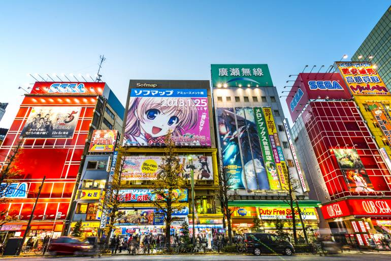

Japan is an island country in East Asia. It is situated in the northwest Pacific Ocean, and is bordered on the west by the Sea of Japan, while extending from the Sea of Okhotsk in the north toward the East China Sea, Philippine Sea, and Taiwan in the south.
Things to do in Japan
Fig. 1- Cherry Blossoms
Cherry blossom season starts in Kyushu in southwestern Japan in March, and daily news reports follow the cherry blossom front as it advances northward. The most common cherry trees are Somei-Yoshino, with masses of pale pink blossoms. Don’t miss the elegant shidare-zakura, weeping cherry trees, which often grow in parks and along riverbanks.

Fig. 2 - Akihabara crossing in 2018
Akihabara is a buzzing shopping hub famed for its electronics retailers, ranging from tiny stalls to vast department stores like Yodobashi Multimedia Akiba. Venues specializing in manga, anime, and video games include Tokyo Anime Center, for exhibits and souvenirs, and Radio Kaikan with 10 floors of toys, trading cards, and collectibles.
SPY x FAMILY has now been the Most-Watched Anime in Japanese Streaming Services for three consecutive months, as it topped the charts once again in June.